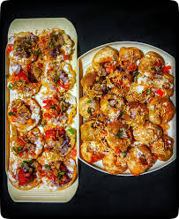
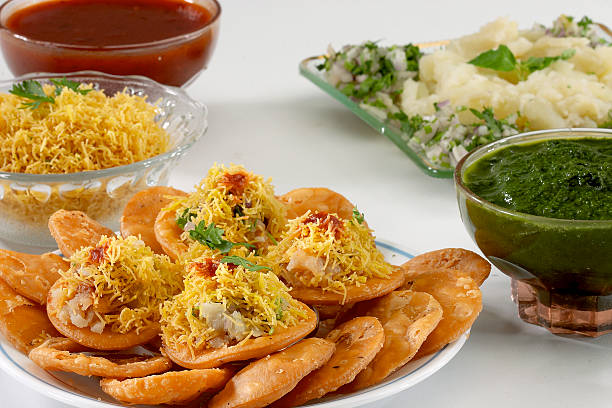

Originating from India, pani puri has variations across regions. It's a burst of flavors in every bite—sweet, sour, spicy, and crunchy. Enjoy it fresh from vendors or make it at homePanipuri is an iconic and beloved street food snack originating from the Indian subcontinent, widely celebrated for its explosion of flavors and textures. It consists of a round, hollow, and fried crisp called a puri, which is punctured at the top and filled with a savory mixture of mashed potatoes, chickpeas, onions, and sometimes sprouted moong beans. The true magic, however, lies in the pani (flavored water)—usually a spicy, tangy green mint-coriander water often paired with a sweet tamarind chutney. When eaten, the entire filled puri is popped into the mouth at once, creating a burst of spicy, tangy, sweet, and savory tastes combined with the satisfying crunch of the shell. Known by various names across regions—such as Golgappa in North India, Puchka in West Bengal (where the water is more sour and tamarind-heavy), and Gupchup in parts of Odisha and Bihar—it is a culinary staple that brings people together at roadside stalls across the country. +4!Here is another paragraph focusing on the unique cultural experience of eating Panipuri: Beyond just being a snack, eating Panipuri is a distinct social ritual in India that engages all the senses. It is rarely eaten in isolation; instead, groups gather around a street vendor’s cart, holding small leaf or steel bowls, eagerly waiting for their turn in the circle. The vendor works with rhythmic precision, cracking the crisp shell with a thumb, stuffing it with the masala, and dipping it deep into the earthen pot of chilled, spicy water. The experience is highly interactive and customizable in real-time—customers often signal for more "teekha" (spicy) or "meetha" (sweet) water mid-round to suit their palate. The meal typically concludes with a customary free "Sukha Puri"—a dry, crisp shell topped with just salt, cumin, and lemon—offered to cleanse the palate and soothe the fiery heat of the spices.
The dish is built upon a base of small, crispy flat puris (also called papdis) made from flour. These puris are topped with a flavorful mixture that typically includes seasoned boiled potatoes, finely chopped onions, and sometimes tomatoes or chickpeas. The key to the dish lies in the assortment of chutneys drizzled over the mixture: a spicy green chutney (made from mint and coriander), a sweet and tangy tamarind-date chutney, and sometimes a pungent red garlic chutney. The entire assembly is then generously garnished with sev (thin, crispy gram flour noodles), fresh cilantro, and a sprinkle of chaat masala and a squeeze of lemon juice. Sev puri is best served immediately to maintain the crispness of the puri and is a favorite evening snack or party appetizer across India. A popular variation known as dahi puri adds yogurt to the ingredientsSev puri is a popular Indian street food and a type of chaat (savory snack), originating from cities like Mumbai and Pune in Maharashtra. This delicious, bite-sized dish is often described as an Indian canapé, featuring a delightful explosion of sweet, spicy, tangy, and salty flavors, along with contrasting soft and crunchy textures in every bite. Sev puri is an iconic Indian street food that originated in Mumbai and Pune. As a popular type of chaat, it is often described as an "Indian canape" due to its bite-sized assembly. The dish typically features small, crispy, flat flour discs known as papdis or puris as a base. These are topped with a savory medley of boiled potatoes (batata), finely chopped onions, and sometimes tomatoes or chickpeas. Its distinctive flavor comes from a combination of three essential chutneys—spicy green mint-coriander, sweet-and-sour date-tamarind, and a pungent red chili-garlic sauce—drizzled generously over the toppings. .
Dahi puri is typically served as a plate of 5 or 6 pieces. Unlike pani puri, which is often served one at a time by a vendor, dahi puri is served as a complete set and should be eaten immediately. If left to sit, the moisture from the yogurt and chutneys quickly makes the crisp shells soggy. Each puri is intended to be eaten in one whole bite to experience the "explosion" of contrasting textures and temperatures. Dahi puri is a popular Indian street food and a staple of the chaat category that originated in Mumbai, Maharashtra. This savory snack is characterized by its complex balance of sweet, spicy, and tangy flavors, as well as its contrasting textures. It is prepared using small, hollow, crispy shells called puris, which are the same ones used for pani puri. To assemble the dish, a hole is poked into each shell and filled with a base of mashed boiled potatoes, chickpeas, or sprouted moong beans. These are then layered with spicy mint-coriander chutney and sweet-tangy tamarind chutney. The defining feature of dahi puri is the generous topping of chilled, sweetened, and beaten yogurt (dahi), which fills the shells and often overflows onto the plate. For the final touch, the dish is heavily garnished with fine sev (crunchy gram flour noodles), pomegranate seeds, and fresh coriander, then dusted with chaat masala and roasted cumin powder. Because the yogurt and chutneys quickly soften the crispy shells, dahi puri must be eaten immediately. It is typically served as a set of five or six pieces, with each piece intended to be consumed in a single bite to experience the "explosion" of flavors and temperatures.